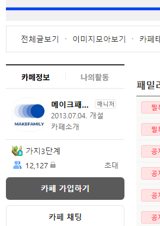

매번 직접 팔지 않아도
구매로 이어지는

무료자료를 받은 사람이
다음 상품을 살 수 있도록
신청부터 후속 판매까지 연결합니다
무료자료 하나에서
시작한 하루
무료 가이드북과 신청 페이지를 만들고
자료 발송과 후속 판매를 연결했습니다
“하루 만에 명단 550개,
매출 200만원.”
AIMAX 「팔로워 0에서 파는 스레드」 무료배포
2026.07 · 책 1장에 기재된 카페24 실측 사례
자료는 열심히 뿌리는데
판매는 왜
다시 처음부터일까요
필요한 분은 받아 가세요
신청한 사람에게
다음 제안이 갑니다
무료자료 · 신청 명단 · 유료 상품
이 세 가지를 따로 두지 마세요
자동 퍼널은
이 일곱 칸입니다
지금 있는 것과 없는 것을 적으면
어디부터 채울지 보입니다
무료자료 제작
내 글·메모·고객 질문으로 받을 이유 만들기
무료 상세페이지
누가 왜 받아야 하는지 한 페이지로 설명하기
배포 콘텐츠
자료가 필요한 사람에게 신청 경로 알리기
신청 명단 수집·발송
신청을 기록하고 약속한 자료 전달하기
후속 판매
자료를 받은 사람에게 다음 제안하기
유료 상세페이지
더 깊은 내용을 원하는 사람에게 상품 소개하기
감시·측정
신청·발송·클릭·구매와 멈춘 구간 확인하기
책 2장 ‘절대 안 바뀌는 자동 퍼널 뼈대’ 요약
책 써달라는 말보다
인터뷰부터
내가 아는 것이 자료가 됩니다
고객이 묻는 질문부터 꺼내보세요
나는 [자취 살림] 주제로 전자책을 만들 거야. 근데 글쓰기가 어려워.
네가 나를 인터뷰해줘 — 이 주제 초보가 제일 궁금해할 질문 10개를 뽑아 하나씩 물어봐.
답이 짧으면 “더 구체적으로, 예를 들면?” 하고 되물어줘.
한 번에 한 질문씩.
대괄호 안을 내 주제로 바꿉니다
질문에 답하고 → 목차를 고르고
내 사례를 넣어 본문을 만듭니다
신청에서 발송까지
끊기지 않도록
반자동으로
한 번 직접 보내보며
누락과 예외 확인
자동 실행으로
계정과 도구 연결
발송·실패 기록 확인
책 4~5장 · 제작과 실행을 나누어 연결하는 순서
팔라는 말 대신
살 이유를 쌓습니다
무료자료와 유료 상품을
같은 주제의 다른 깊이로 연결합니다
자료 보내기
신청한 자료를 보내고 받았는지 확인
핵심 요약
자료에서 가장 중요한 포인트 하나
막힌 문제
초보가 자주 막히는 지점 짚기
사례 보여주기
후기·적용 사례·전후 변화로 설명
유료 상품 제안
더 깊은 내용과 상세페이지 연결
책 6장에 실린 후속 메시지 순서
광고 과장 말고,
무료자료와 유료상품이
같은 주제의 다른 깊이로
이어지게 써줘.
문구만 만들고 끝내지 않습니다
수신 동의와 구매 여부, 발송 실패를
확인하는 과정도 책에서 다룹니다
자동으로 보냈다는데
정말 도착했나요
내 정보로 한 번 신청하고
자료가 도착하는 것까지 확인합니다
신청이 기록됐는지
내 정보가 명단에 들어왔는지 확인
자료가 도착했는지
발송 결과와 실제 받은 자료를 함께 확인
멈춘 곳을 알 수 있는지
실패 기록과 감시 리포트까지 연결
책 5~6장 · 발송 테스트와 감시·측정
전체 흐름을 잡고
내 사업에 채웁니다
실행 사례와 일곱 칸
550개 명단·200만원 사례
내가 가진 것과 없는 것 점검
무료자료와 신청 경로
내 경험을 인터뷰로 꺼내기
목차·본문·상세페이지·배포글
발송과 후속 판매
내 도구 연결 · 테스트 발송
4일 후속 제안 · 감시·측정
함정 열 개와 마스터 명령
자주 막히는 부분 점검
전체 작업을 한 번에 설명하는 명령
이런 분께 권합니다
무료자료를 줘도 다음 판매가 없는 분
신청이 올 때마다 직접 보내는 분
AI로 내 판매 흐름을 만들고 싶은 분
사람을 모으고
매출을 만들어온 곳
메이크프렌즈 누적 매출
2021.01 — 2024.04
(주)메이크프렌즈 전체 매출 · 월별 원장 40개월 합산
각 막대는 2021년 1월부터 해당 시점까지의 누적액
모으는 것부터
소식을 전하는 것까지

2026.09.10 화면 기준 · 방별 합계는 중복 참여 포함

2026.09.10 카페정보 화면 · 네이버 카페 westudyssat
책으로 읽고
내 작업에 꺼내 쓰세요
전자책 PDF
사례부터 마스터 명령까지
브레인 파일
장별 MD · AI에_넣을_책전체.txt
결제한 이메일로 자료를 받고
같은 이메일로 라운지에서도 읽습니다
자주 묻는 질문
Q처음부터 코딩 도구가 필요한가요?
무료자료와 판매 문구를 만드는 단계부터 시작합니다. 실행 자동화는 계정과 도구를 연결하고 테스트하는 다음 단계입니다.
Q버튼을 따라 누르는 매뉴얼인가요?
자동 퍼널의 설계와 AI 지시문, 점검 과정을 다룹니다. 특정 서비스의 화면마다 버튼 위치를 설명하는 책은 아닙니다.
Q‘24시간’은 어떤 의미인가요?
책 제목에 담긴 저자의 실행 경험입니다. 본문에서는 내 상황을 점검하고 필요한 칸부터 채워갑니다.
다음 판매를
전자책 PDF + 브레인 파일 + 라운지 열람
결제 이메일로 수령 · 같은 이메일로 라운지 로그인